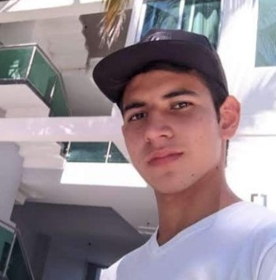

Welcome to My Personal Website

My name is Luis Antonio Casillas de la Cruz, I am 20 years old and I really like video games, I also enjoy music and watching hardware maintenance videos.
I am a very outgoing guy who likes to talk and make friends wherever he goes, my favorite food is sushi rolls and I am currently studying software engineering.
Resume
I am a calm person who enjoys being at home and playing video games while listening to music. I also really like editing videos and studying about new hardware technologies.
Education
- Office technician - CBTA 246 (2019-2022)
Work Experience
- Video and photo editor (April 2020 - Present)
- Computer Repairman (April 2019 - Present)
Skills
- Video and photo editor ★★★★
- Computer equipment repair ★★★★
- Know a little python ★
- Handling carpentry work tools ★★★
Awards and Certifications
- Certified in Office Automation Technician (June 2022)
- Certified in one of drywall (April 2019)
About Me
This is a summary of the most important things in my life.
Personal Information
- Date of birth: April 27, 2004
- Born in Tepic, Nayarit, Mexico
- Currently lives in La Cantera, Nayarit
- Last grade of studies: high school
- Study at high school: Centro de Bachillerato
Jobs I have worked in
- Furniture creation with drywall and wood
- Call center job at Megacable
- I know how to maintain electronic equipment
- Video editing job
- Work in a restaurant
- Team leadership skills
- Work in a computer equipment repair center
- I know a little programming